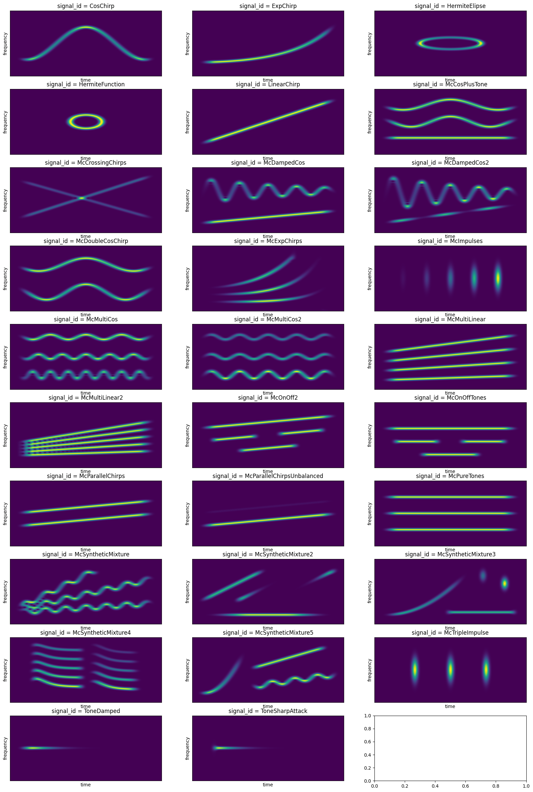

SignalBank Example
The SignalBank class encapsulates the signal generation code and yields a dictionary with a number of signals. In order to access those signals, the keys of this dictionary are called signal_id. The constructor simply takes the number N of samples of the desired signals.
[1]:
import numpy as np
from numpy import pi as pi
from matplotlib import pyplot as plt
from mcsm_benchmarks.utilstf import *
from mcsm_benchmarks.SignalBank import SignalBank
[2]:
N = 1024
signal_bank = SignalBank(N=N)
signals_dic = signal_bank.signalDict
number_of_signals = len(signals_dic.keys())
# nplots = int(np.ceil(np.sqrt(number_of_signals)))
# print(nplots)
fig, ax = plt.subplots(10, 3, figsize = (20,30))
for i,signal_id in enumerate(signals_dic):
signal = signals_dic[signal_id]()
S, stft = get_spectrogram(signal)
stft = stft[0:N+1,:]
idx = np.unravel_index(i, ax.shape)
ax[idx].imshow(abs(stft), origin = 'lower')
ax[idx].set_title('signal_id = '+ signal_id)
ax[idx].set_xticks([],[])
ax[idx].set_xlabel('time')
ax[idx].set_yticks([])
ax[idx].set_ylabel('frequency')
/home/juan/Documents/asasda/mcsm-benchmarks/mcsm_benchmarks/SignalBank.py:1174: RuntimeWarning: divide by zero encountered in divide
e = np.exp(-alfa*np.arange(tt))*((np.arange(tt)-c)**2/np.arange(tt))
/home/juan/Documents/asasda/mcsm-benchmarks/mcsm_benchmarks/SignalBank.py:1362: RuntimeWarning: divide by zero encountered in divide
e = np.exp(-alfa*np.arange(tt))*((np.arange(tt)-c)**2/np.arange(tt))

Controlling the signal’s effective length inside the observation window
[3]:
N = 256
signal_bank = SignalBank(N = N)
signals_dic = signal_bank.signalDict
fmin = signal_bank.fmin
fmax = signal_bank.fmax
tmin = signal_bank.tmin
tmax = signal_bank.tmax
Nfft = 2*N
signal_names = ['LinearChirp', 'CosChirp', 'ExpChirp', # Single-component signals
'McCrossingChirps', # Crossing-components
'McMultiLinear','McPureTones', # Multi-Component Harmonic signals
'McMultiCos','McDoubleCosChirp', # Multi-Component Non-Harmonic
'McSyntheticMixture2',
'HermiteFunction','HermiteElipse', # Hermite type signals
'ToneDamped','ToneSharpAttack', # Dumped and Sharps attacks
'McOnOffTones'] # Modes that born and die
fig, ax = plt.subplots(5, 3, figsize = (20,20))
for i,signal_id in enumerate(signal_names):
signal = signals_dic[signal_id]()
S, _, = get_spectrogram(signal)
idx = np.unravel_index(i, ax.shape)
# print(idx)
ax[idx].imshow(S, origin = 'lower')
ax[idx].set_title('signal_id = '+ signal_id)
ax[idx].set_xticks([],[])
ax[idx].set_xlabel('time')
ax[idx].set_yticks([])
ax[idx].set_ylabel('frequency')
ax[idx].plot([tmin, tmin],[fmin*Nfft, fmax*Nfft],'--w')
ax[idx].plot([tmax, tmax],[fmin*Nfft, fmax*Nfft],'--w')
ax[idx].plot([tmin, tmax],[fmin*Nfft, fmin*Nfft],'--w')
ax[idx].plot([tmin, tmax],[fmax*Nfft, fmax*Nfft],'--w')